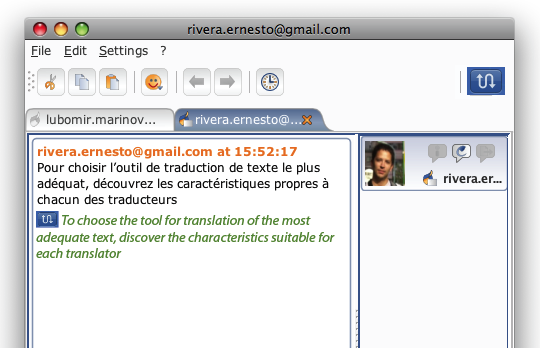
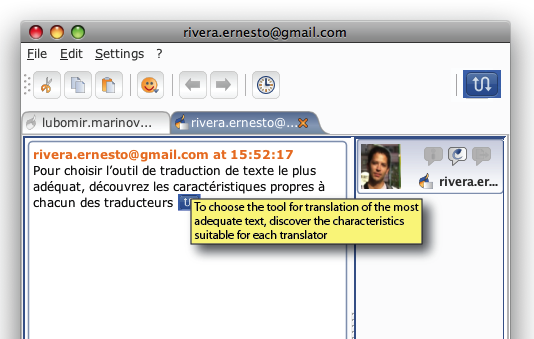
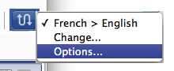
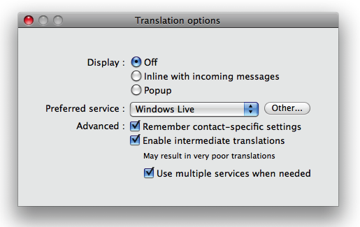

Message translation
Google’s Summer of Code 2008 project.
- Mentor: Lubomir Marinov
- Student: Ernesto Rivera rivera.ernesto at gmail.com
Project status
- 18/8: Documentation completed and last commit before SoC’s “pencils down” deadline.
- 16/8: Version 1.0.0, JavaDoc uploaded
- 07/8: First working GUI
- 12/7: Final GUI proposal for v1
- 07/7: Translation module v0.1.5
- 30/6: Translation module v0.1.0
- 23/6: Translation module v0.0.1
- 17/6: Translation to be implemented as and OSGi bundle
- 11/6: Proposed implementation
- 22/5: Desisted using XCode, everything working now with IntelliJIDEA 7
- 19/5: Uploaded GUI prototypes. Experimenting with XCode 3
- 14/5: First Wiki edit. Experimenting with XCode 3
Project’s JavaDoc (API)
http://two.xthost.info/soc/javadoc
Project Documentation
Description
The translation module:
- Gets the contents of incoming or outgoing messages.
- Sends an HTTP request to a web translation service.
- Parses the incoming HTML response from the server to retrieve the translation.
- Shows the translation in the chat window, or sends a new translated message to the chat contact (incoming and outgoing messages respectively).
Long messages are divided into shorter fragments if required by the server. To ensure the integrity of translations, tags are added at the beginning and the end of text fragments prior to making the HTTP request. Once a server response is received the presence of these tags is verified and translated fragments are put together.
GUI
The user interface is limited to a menu bar item where users can: quickly enable/disable translations, check the translation service current settings, verify which service has been used for the last translations, and open the translation options’ dialog.
The options dialog is very simple: it allows to enable/disable translations, choose language pairs as well as specify a preferred translation service.
Note: The actual translation service may differ from the user’s preferred one depending on service availability and/or the ability of the service to translate between a given pair of languages. To confirm the actual translation service users can check the translation menu.
Translations are shown inside SC as normal messages preceeded by the Translation: text.
As for contact’s chat client, only incoming translations are shown.
As you can see there are some encoding problems depending on the web translation used, specially as in the case of Google Translate used for the examples above.
Services’ description XML file
Web based translation services are regularly subject to changes of address, HTTP request format, resulting page layout and/or available translation languages. Also some new services may become available while others disappear or require authentication or fees.
For all these reasons a way to easily add and modify services’ parameters has been designed as a XML file syntax for describing services.
To define a new web translation service only a few parameters are needed, and no compilation is required by the user:
- Service name (description only).
- Available language pairs.
- A HTTP request template such as
http://translate.google.com/translate_t?sl=<source/>&tl=<target/>&text=<text/>, where tags in bold need to be replaced by the language pair and text to be translated. - HTML response search tags to search the incoming HTML response looking for the translated string.
Other parameters such as server limits (text length or time intervals) and service-specific way of encoding languages (ex. en, eng, english) can be specified.
Description file is read from a default URL address, to ensure users have always up to date XML configuration file. In case of failure a local XML file is read.
Preferences
Settings are saved on a per contact basis, meaning that users can have different settings for each contact they communicate with through the translation module.
Module as a standard OSGi module
The service was created first as a standard OSGi module for the first part of the project, trying to keep it as independent as possible from SIP Communicator implementation. However at the time of integrating the module inside SC some modifications were necessary (package names, imports and mor important the functions of the activator class which is now 90% SC-specific code).
It should be however easy to use the module to be used as a OSGi standard module by other open source projects. It will require removing SC-specific code from the activator and ignoring the TranslationGUI and TranslationPreferences classes which are SC-specific.
Plugin vs. Service
The translation module was implemented as GUI Plug-in instead of a service.
However the implementation (plugin/translation) being cleanly separated from the service specification (plugin/translation/service) makes it easy to convert the plugin into a SC service if considered necessary.
Development
Final GUI proposal for v1
A more precise idea of the way the project will look at the end of the program. Many features from the past proposal have changed or have been removed in order to have a solid and not half-finished version 1 (upon which further development can be cleanly done beyond the scope of SoC).
Also compare to the “GUI prototype” section below
Translated text presentation:
- Translation will be inline for v1. It is both easier to implement and consistent with outgoing translations as we don’t know (neither we can control) the partner client’s GUI.
- In order to distinguish translated text it could be on italics, a different color, etc. Are those text styles available for SIP supported protocols?
- Again as SIP will communicate with other clients and multiple protocols, it maybe wiser to just enclose it with other text, ex.: Autotranslation […]
Menu bar
- Instead of using the icons toolbar, I intend to implement an extra menu between “Settings” and the “?” menus.
- Menu items just before the separators are informative items, as such they will be grayed out and updated during runtime as needed.
Translation options
- Choosing the last option of the translation menu opens this window. It focuses more on what users want (translate text) so there it’s not a typical combo box with all available language pairs. I think it is quite clean and minimalist GUI.
- The preferred service will be used only if available for the language pair and the service is online, otherwise another service will be used and the status in the menu will be updated to reflect the change (unintrusive to the user).
- Settings will depend on the current partner.
Translation proposed implementation
The idea is to implement the service as abstracted and open as possible, independent from a particular translation service while making it easy to add/modify new/existing services.
It will consist of:
- GUI and integration within SIP (described in the next section)
TranslatioServiceinterfaceHTTPTranslationServicea particular implementation of said interface<name>TranslationService.XMLused by the class above to translate text using a particular service
TranslatioService interface
As of now all surveyed translation services have to been accessed through HTTP requests, while resulting translation will have to be parsed-out from resulting HTML code sent by the service. However this interface will serve as an abstraction layer in order to ensure that other translation mechanism can be added in the future (for instance translation using an offline translation application installed on the same computer).
This interface defines only a very obvious function:
String translateText(String text, sourceLnaguage, targetLanguage)
HTTPTranslationService class
This will be the only actual implementation of the TranslatioService interface. It is a service-independent class that deals with any HTTP-request-based translation service.
The class will discover existing XML description files (described below) to provide SIP with a translation service.
The task of the class is to deal with all actions needed to translate text using such HTTP-request services:
- Cut down long text according to service’s lenght limit
- Make string coding conversions and escape special characters
- Create the HTTP request(s)
- Parse results to retrieve translated text
This class will develop into a robust class capable to handle many HTTP limitations, however no hardcoded code will be allowed.
TranslationService.XML description files
One file per translation service. All service-specific information will be described here and nowhere else:
- Request parameters
- Base URL (ex.
http://translate.google.com/translate_t) - Default request method: POST, GET
- Language pairs or information about how to get it (ex. combo box name containing such pairs)
- Text length limit
- Other service-specific parameters (ex.
client=SIPComm)
- Base URL (ex.
- Retrieval parameters
- Parsing cues
- Code cues (ex.
start=‘<div id=result_box dir=“ltr”>’ end=‘</div>’) - Regular expressions
- Code cues (ex.
- Parsing cues
GUI prototype
Before starting with the real thing it would be good to agree on what we expect. So please give your feedback.
Displaying translated text
Two possible options (more needed?):
- Inline just after the original text
 - Show only original/translated text, the other one is displayed when hovering mouse over the translation icon

Translation options
- Translation menu
 - Options panel

Project proposal
Create a SIP plug-in to support real time translation of chats, RSS feeds or any other SIP module:
- Create a translation service independent plug-in to make it easy to modify/replace/add/switch between services. In other words crate an abstraction layer between SIP, the translation plug-in and the actual translation services.
- Add support for as many translation services as possible during the summer.
- Define an interface and document an easy-to-follow guide for adding new services in the future.
As for available services, the most used today are Google Translate and BabelFish. The later one actually based on Systran, the same service that powers the Mac OS X translation widget. Those two are not however the only candidates.
Features I intend to implement in detail:
- The receiver of messages will be the one who enables/disables translation as:
- He is the one who decides if he needs a translation or not.
- He has to choose his preferred target language among available ones.
- The plug-in will remember our translation settings for each buddy we have (ex. John: BabelFish Spanish→English)
- As translations are not perfect, we should provide both the original text and the translated one. Many options for differentiating them:
- Pop-up translation on mouseover.
- Highlight translated text (ex. italics) and/or append some text at the end of translation (ex. �translated by Systran�).
- Better yet, add a virtual buddy to the chat. For instance a �BabelFish� buddy complete with its cute icon who will translate the chat.
- Translation is made either:
- On the fly as messages arrive.
- Once clicking a button.
- From text selections using contextual menus.
We could also try to detect the source text original language, but as users have to choose their target language anyway, maybe automatic source language detection is not worth the hassle.
Project schedule
- Study SIP architecture and code in detail. Code the tutorial. Review translation services� available APIs (interim period).
- Fully detail plug-in expected behavior. Get feedback and suggestions from the SIP community (1-2 week).
- Create abstraction layer using a mock translation service (2-3 weeks).
- Implement at least two translation services (1 week each).
- Create unit tests, clean and debug (1-2 week).
- Document and crate a detailed guide for adding new services (1-2 weeks).
Optional tasks (time allowing):
- Add as many services as possible.